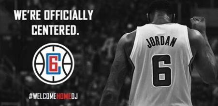

1922年的春天，一个想要成名名叫尼克•卡拉威（托比•马奎尔Tobey Maguire 饰）的作家，离开了美国中西部，来到了纽约。那是一个道德感渐失，爵士乐流行，走私为王，股票飞涨的时代。为了追寻他的美国梦，他搬入纽约附近一海湾居住。
菲茨杰拉德，二十世纪美国文学巨擘之一，兼具作家和编剧双重身份。他以诗人的敏感和戏剧家的想象为"爵士乐时代"吟唱华丽挽歌，其诗人和梦想家的气质亦为那个奢靡年代的不二注解。

洛杉矶快船队，成立于1970年并加入NBA，是一支属于美国的加利福尼亚州洛杉矶为基地的NBA职业篮球队，是美国男篮职业联赛（NBA）西部联盟太平洋赛区的一部分。
快船队搬迁过多次，1970年初入NBA称为布法罗勇士队，1977-78赛季，勇敢者队搬到圣地亚哥，很快改名为快艇队。从1976-77赛季开始，快船队连续16个赛季未能进入季后赛。1981年球队易主，斯特林成为球队老板，在1984年将球队搬到洛杉矶。但一直摆脱不了鱼腩球队的身份，最好战绩是分区半决赛。
快船队在2009年选中的状元秀布雷克·格里芬，成为球队未来的基石与希望。2011年休赛期随着克里斯·保罗的加盟，洛杉矶快船队正式迈入NBA联盟强队行列
